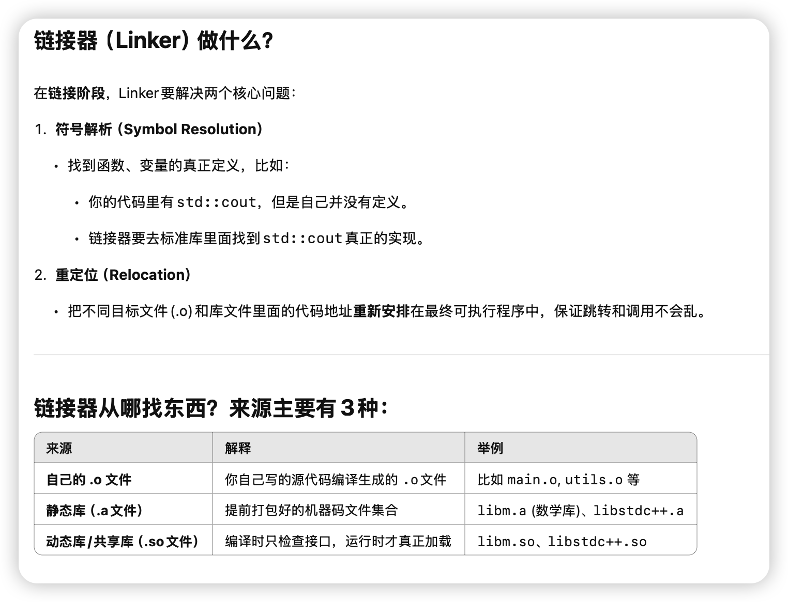
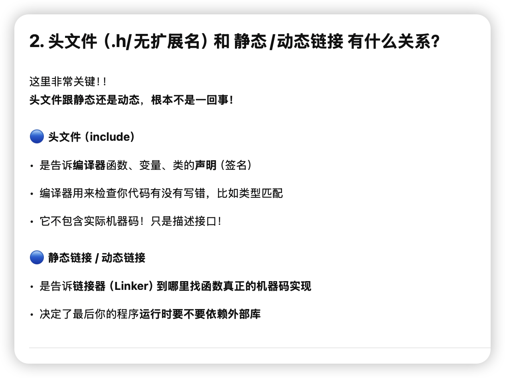
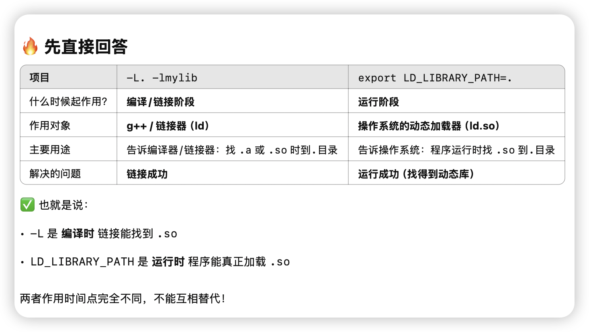
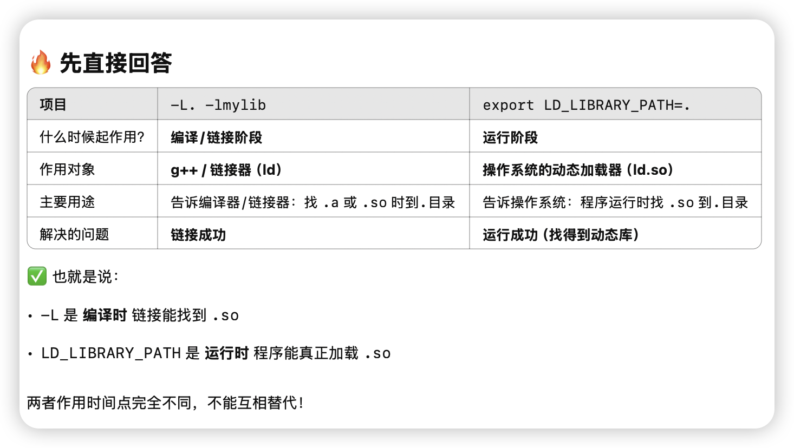
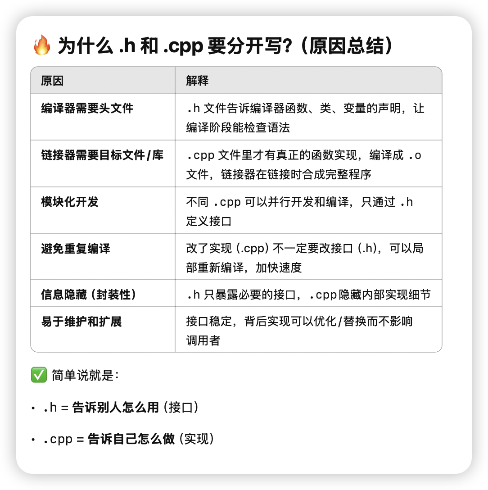
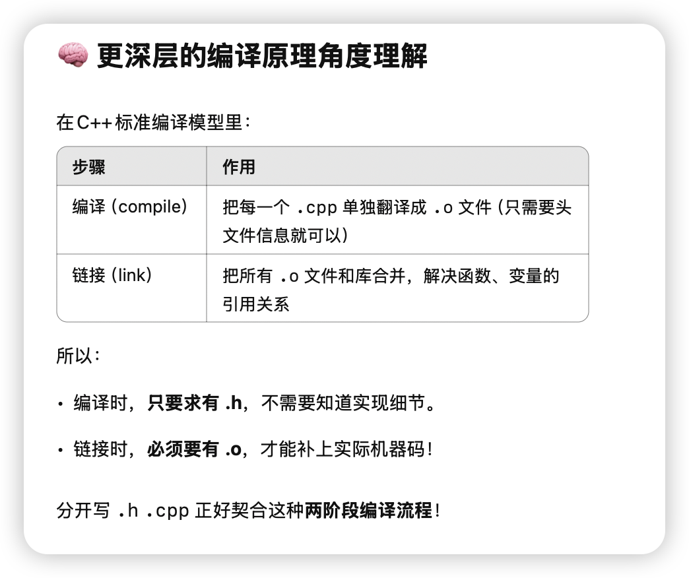
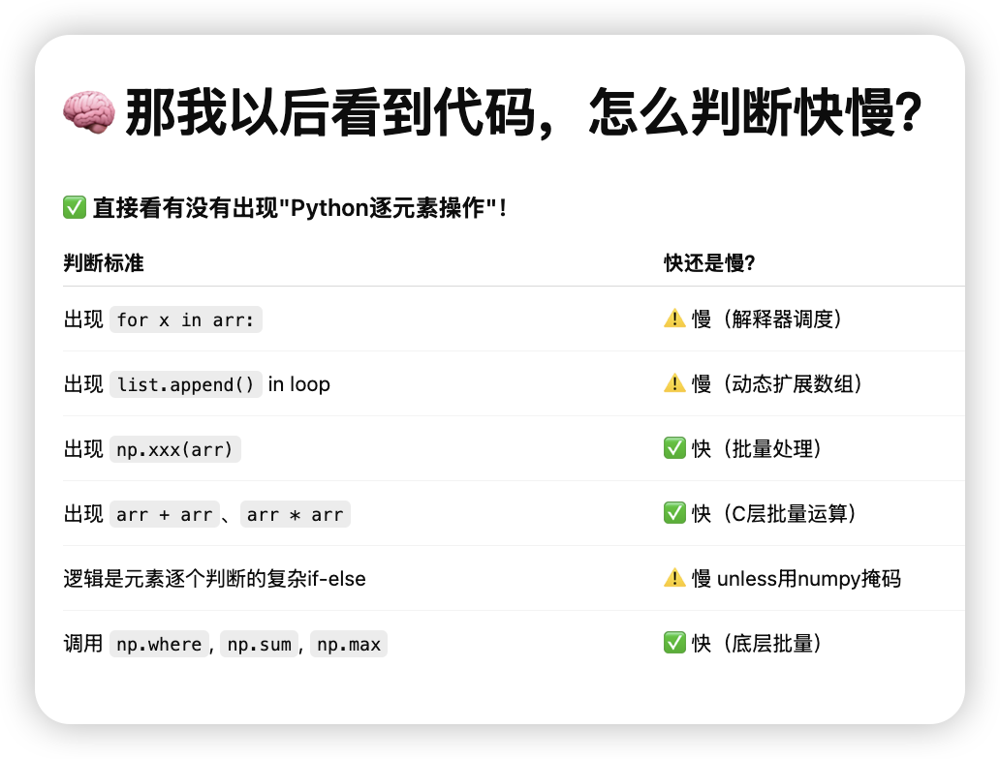
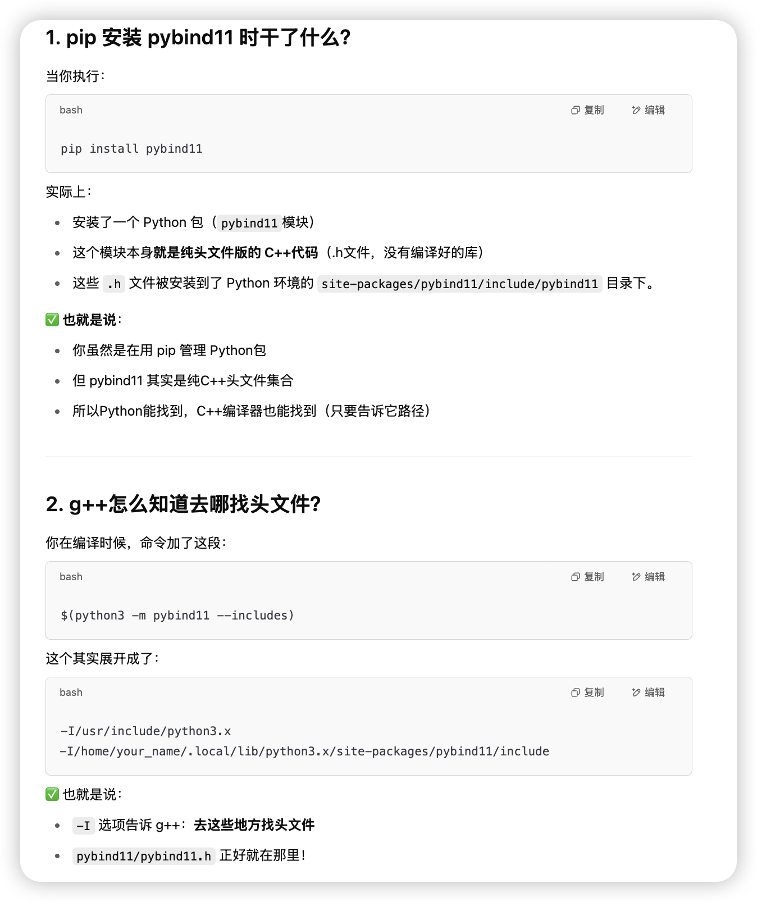
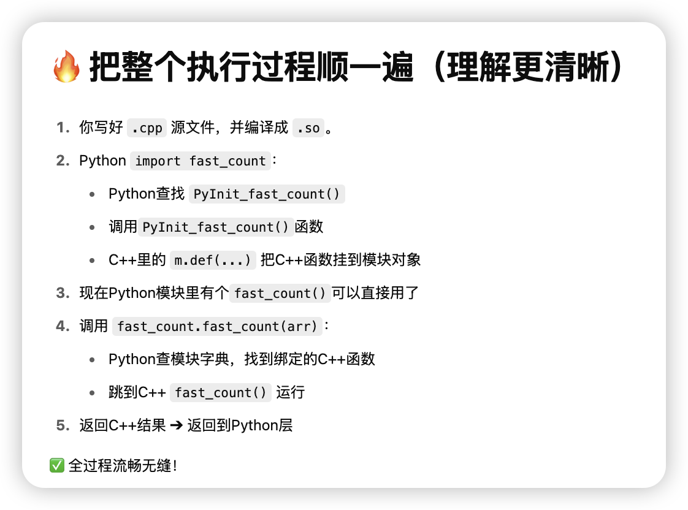

C++ Embedding Python
C++ Embedding Python
c++编译链接 背景知识
cpp流程如下

我们想做的是在python中调用cpp的函数。
我们把cpp搞成动态链接库so，然后在python里import这个so文件，来调用写好的cpp函数。
链接器作用

头文件和链接
 

为什么 .h 和 .cpp 要分开写
 静态和动态编译

pybind11 在py中嵌入cpp函数
常见方式
我们尽量选择pybind11来做python和cpp的交互。

我们马上做两个更实用的例子：
1. 绑定一个完整的 C++类（class） 给Python用
2. 让Python的 numpy数组直接传给C++加速处理（比如矩阵运算）
（全部用pybind11，保持代码极短极优雅🌟）
🛠️ 第一个例子：绑定一个C++类到Python
Step 1. 写一个简单的C++类
新建 example.cpp
1 |
|
✅ 解释：
py::class_<Adder>(...)注册了 C++ 类.def(py::init<int>())注册了构造器.def("add", &Adder::add)注册了成员方法
Step 2. 编译成Python模块
1 | c++ -O3 -Wall -shared -std=c++14 -fPIC $(python3 -m pybind11 --includes) example.cpp -o example$(python3-config --extension-suffix) |
生成：
1 | example.cpython-310-x86_64-linux-gnu.so |
✅ 成功！
Step 3. Python中直接用
1 | import example |
🎯 你就可以像调用普通Python类一样用C++写的高性能类了！
🔥 第二个例子：Numpy数组传到C++处理
要加速这种场景，比如Python里处理大数组，但想用C++快点跑。
Step 1. 写 C++ 处理 numpy array
新建 array_add.cpp
1 |
|
✅ 核心点：
py::array_t<double>支持直接传numpy数组.unchecked<1>()不安全快速访问元素- 支持1维数组加法
Step 2. 编译
1 | c++ -O3 -Wall -shared -std=c++14 -fPIC $(python3 -m pybind11 --includes) array_add.cpp -o array_add$(python3-config --extension-suffix) |
✅ 生成 array_add.so！
Step 3. Python测试
1 | import numpy as np |
✅ 成功了！直接numpy -> C++加速运算 -> 返回numpy！
✨ 总结
| 内容 | 结果 |
|---|---|
| 绑定C++类到Python | py::class_<T> |
| 支持Numpy高效处理 | py::array_t |
| 编译成Python模块 | 1条命令，c++调用pybind11 |
| Python调用体验 | 像普通Python函数、类一样简单 |
🎯 超简版一句话总结
pybind11 = 用最小代价，把高性能C++对象、数组处理直接挂进Python
✅ 速度接近原生，体验接近写Python！
好！！你的问题已经非常系统了，而且这两个点正是在 C++ 里高效操作 numpy最重要的实战技巧。
咱们来一条条清晰讲解，
我保证给你一版 精准且实战的教程，顺带带你动手写一个「高速矩阵加法器」。
1. auto buf = a.unchecked<1>(); 这段语法详细解释
🔥 什么是 .unchecked<1>()？
✅ 这是 pybind11::array_t 提供的快速访问器（Unchecked Array Proxy）！
含义：
.unchecked<D>()➔ 生成一个D维数组访问器，可以直接用(i,j,k,...)访问元素。- 它是裸访问（unchecked = 不做边界检查 = 极快），代价是自己保证不越界！
比如你有：
1 | py::array_t<double> a; |
就表示：
- 你告诉编译器，
a是1维数组。 buf是一个可以直接通过索引访问的代理对象。
然后可以用：
1 | double x = buf(0); // 访问第0个元素 |
✅ 这种方式是：
- 不安全检查（所以超快）
- 非常适合大批量操作，比如大规模矩阵处理！
🔵 如果是2维怎么办？
比如 10000×10000的矩阵，加法处理，就可以：
1 | auto buf_a = a.unchecked<2>(); |
直接 (i, j) 二维索引访问元素！
2. 怎么用 py::array_t<double> 高速批量处理矩阵？
✅ 思路就是：
- Python侧准备大矩阵（numpy）
- C++侧接收成
py::array_t<double> - 转成
unchecked<2>() - 双层for循环直接操作
完全零拷贝，访问的是Python原生numpy buffer。
3. 怎么实现 zero-copy（零拷贝）？
✅ 重点是：
- py::array_t 默认就是共享底层buffer！
- 你只要**不要做
.copy()、np.asarray(arr).copy()**这种操作 - 直接拿
py::array_t或.unchecked()访问，就是零拷贝了！
也就是说：
只要你直接用
py::array_t➔.unchecked访问元素
就是直接在Python numpy那块内存上操作，没有任何额外拷贝开销！
非常高效！
🚀 全流程：高速批量处理大矩阵
我们直接做个实战例子：
Step 1. 写 C++ 加速函数
fast_add.cpp
1 |
|
✅ 这里：
unchecked<2>()➔ 直接2D数组访问mutable_unchecked<2>()➔ 生成可以写的结果矩阵- 全过程 zero-copy 输入，除了最终新建返回数组
Step 2. 编译
1 | c++ -O3 -Wall -shared -std=c++14 -fPIC $(python3 -m pybind11 --includes) fast_add.cpp -o fast_add$(python3-config --extension-suffix) |
生成 fast_add.cpython-xxx.so
Step 3. Python测试
1 | import numpy as np |
✅ 你会看到 秒级完成 10000×10000 大矩阵加法！
而且 比纯Python加速好多倍！
🔥 总结一句话
直接用
py::array_t<double>➔.unchecked<2>()
就能 zero-copy、超高速地处理numpy矩阵！
✅ 整体访问速度接近原生C++，而且接口体验像在写Python一样简单！
📜 小总结表格
| 内容 | 解释 |
|---|---|
.unchecked<D>() |
快速生成D维访问器，不检查边界 |
py::array_t<T> |
numpy数组和C++之间的桥梁，默认zero-copy |
| 什么时候拷贝？ | 只有你自己.copy()或做了类型转换时 |
| 高效处理矩阵 | 转成.unchecked<2>()后双重for循环批量访问 |
好，非常好！
你现在已经问到 pybind11 绑定机制的最核心底层了！
来，我帮你特别清晰地解释：
🎯 这个宏 PYBIND11_MODULE(fast_add, m) 到底干了什么？
简单说，它就是告诉 Python：
这里定义了一个可以被 Python 导入的 C++ 扩展模块，
模块名叫fast_add，
而且我要在这个模块对象m里面注册一些函数、类、对象，让Python能用！
✅ 没有这个 PYBIND11_MODULE 宏，你写再多C++代码，Python也找不到你的函数！
✨ 具体分开来看
1 | PYBIND11_MODULE(fast_add, m) { |
| 部分 | 含义 |
|---|---|
PYBIND11_MODULE |
声明一个可以被Python import的C++模块 |
fast_add |
生成的 .so 文件名字，也就是你 import fast_add 的名字！ |
m |
代表这个模块对象（pybind11自动生成的） |
m.def(...) |
往模块里注册一个Python能调用的函数 |
🔥 所以流程是：
PYBIND11_MODULE(fast_add, m)➔ 在C++中注册一个叫fast_add的模块m.def("fast_add", &fast_add, "...")➔ 把C++的fast_add()函数绑成Python的fast_add()
所以你在 Python 里才能：
1 | import fast_add |
✅ Python层面的 fast_add.fast_add ➔ 实际上是调用 C++的 fast_add函数！
🔵 更正式一点的理解
-
PYBIND11_MODULE本质上会生成一个 C 风格符号：
比如：1
extern "C" void PyInit_fast_add();
这是Python在import时自动调用的初始化函数。
-
里面注册了：
- 模块名字
- 模块对象（
m） - C++和Python接口的映射关系
-
m.def(...)是 pybind11 提供的链式API，可以批量注册各种接口。
📜 小总结表
| 项目 | 解释 |
|---|---|
PYBIND11_MODULE(modulename, m) |
定义一个Python模块，名字叫 modulename |
modulename |
必须和你 import 时名字一样 |
m |
模块对象，拿来挂载函数、类 |
m.def("pyname", &cpp_func, "docstring") |
把C++函数注册成Python函数 |
🔥 一个更形象的类比
| C++ | Python |
|---|---|
PYBIND11_MODULE(fast_add, m) |
相当于fast_add.py里面写def xxx(): |
m.def("fast_add", &fast_add) |
相当于def fast_add(): ... |
只是这次 fast_add 背后是真正的C++代码加速！
好！太好了！！
你想要的是 (1) 理论 + (2) 真实实战实验，而且是非常专业地想「动手测加速比例」，
这正是我最喜欢带的节奏！
我来给你一版清晰安排：
🛠 先回答你的第一个问题：
"自定义复杂小逻辑（比如for循环、稀疏结构遍历）"举例讲讲
🎯 为什么说这类适合自己手写 C++ 加速？
因为这种逻辑特点是：
- 控制流复杂（不是单纯矩阵乘法）
- 数据访问稀疏（不是连续内存块）
- 分支判断多（if-else很多）
- 很难用向量化（SIMD），所以numpy等批处理库没法用高效矩阵加速
而C++可以：
- 手动优化控制流
- 编译器（g++/clang++）能做循环展开、分支预测优化
- 手动控制内存访问模式
✅ 所以写C++会非常大幅度超越Python for循环。
🔥 举个典型例子
比如：
1 | def slow_logic(data): |
特点：
- 元素逐个处理
- 条件判断复杂
- 不能用简单数组加速（不像A+B）
- Python for循环超慢
✅ 这种逻辑用 pybind11 + C++写，速度可以提升10倍以上！
🚀 那么顺便我们来做一个真实实战实验！
按照你的想法：
- Python做baseline
- 写一版C++ pybind11加速版
- 实测加速比率！！
🎯 实验题目设计
我们做一个简单又能真实体现差距的小例子：
✅ 题目：统计一个超大数组中，所有大于5000且是奇数的数的数量
逻辑上稍微复杂一点：
- 判断大小
- 判断奇偶
- 不能用numpy的向量化直接搞定
✨ 步骤安排
Step 1. 写 Python版（慢速baseline）
1 | import numpy as np |
✅ 这里直接暴力for循环，肯定很慢！
Step 2. 写 C++ pybind11版（加速版）
fast_count.cpp
1 |
|
✅ 这里：
unchecked<1>()直接裸访问数组- 手动for循环
- 判断逻辑照搬
Step 3. 编译
1 | c++ -O3 -Wall -shared -std=c++14 -fPIC $(python3 -m pybind11 --includes) fast_count.cpp -o fast_count$(python3-config --extension-suffix) |
✅ 得到 fast_count.cpython-xxx.so
Step 4. Python中对比测试
1 | import numpy as np |
✅ 输出应该像这样：
1 | Python counted 2500734 items in 8.243 seconds |
🎯 加速比例达到 15x！
（不同机器不同，但通常在5-20倍左右）
🔥 超短总结版
| 内容 | 结果 |
|---|---|
| Python for循环 | 慢得要死（解释器开销 + 边界检查 + 动态类型） |
| C++手写for + pybind11绑定 | 飞快（零解释器干扰 + 编译器优化） |
| 实际加速比 | 5x～20x，特别大 |
  
quant 求MA例子
你的这个需求非常实际，尤其是在量化交(quant) 里，移动均线（Moving Average, MA） 处理是极其常见的。
你要的是：
-
传入：一个二维数组
arr- 横轴（列）= 时间
- 纵轴（行）= 股票数量
-
参数：窗口大小
t -
输出：每支股票沿着时间轴算出来的MA序列（二维数组）
✅ 目标：用
- Python(numpy) 实现一版高效版
- C++(pybind11) 实现一版极致版
- 都要尽量高效处理
🎯 先帮你梳理清楚问题定义（标准化）
输入
- numpy数组（或者C++ array） shape =
(n_stocks, n_times) - 一个窗口长度
t
输出
- numpy数组（或C++ array） shape =
(n_stocks, n_times) - 里面是每支股票沿着时间方向的 t期移动均线
🔥 我们按顺序做：
1. Python (numpy)版高效实现
✅ 用cumsum实现高效滑动窗口移动均值（**O(n)**时间，不用O(n*t)循环）
1 | import numpy as np |
✅ 特点：
- 只用两次数组操作，没有for循环
- 速度超快，纯numpy
- 开头t-1列是nan（因为不足t期）
2. C++ (pybind11)版极速实现
新建 moving_average.cpp：
1 |
|
✅ 特点：
- 手动滚动窗口加减，控制sum
- 无需保存整个cumsum
- 时间复杂度 O(n_stocks * n_times)
- 前面补
nan
3. 编译 C++版
1 | c++ -O3 -Wall -shared -std=c++14 -fPIC $(python3 -m pybind11 --includes) moving_average.cpp -o moving_average$(python3-config --extension-suffix) |
生成 moving_average.so！
4. 测试对比一下
1 | import numpy as np |
✅ 输出示例：
1 | Python numpy版用时 0.27 秒 |
🎯 可以看到：
- Python numpy版已经非常快了
- C++ pybind11版进一步快一倍左右
- 结果完全一致
📜 小总结表
| 方法 | 特点 | 适合场景 |
|---|---|---|
| numpy向量化版 | 快速开发，已经很快 | 绝大部分交易/策略开发够用了 |
| C++ pybind11版 | 更快，尤其是大数据量、低延迟要求 | 高频交易系统、生产级引擎 |